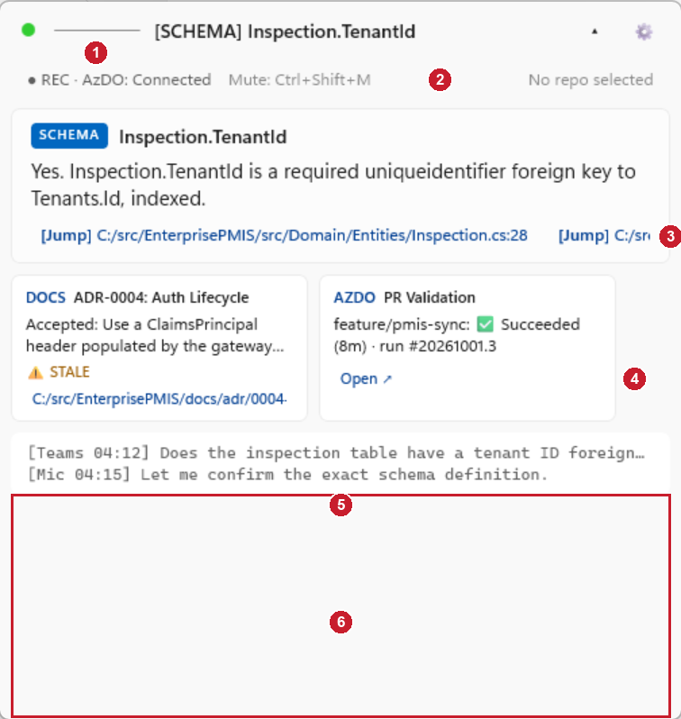
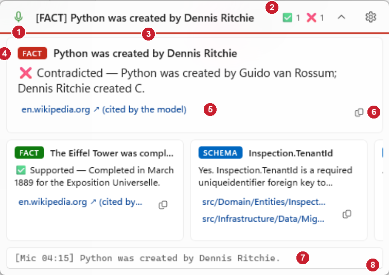
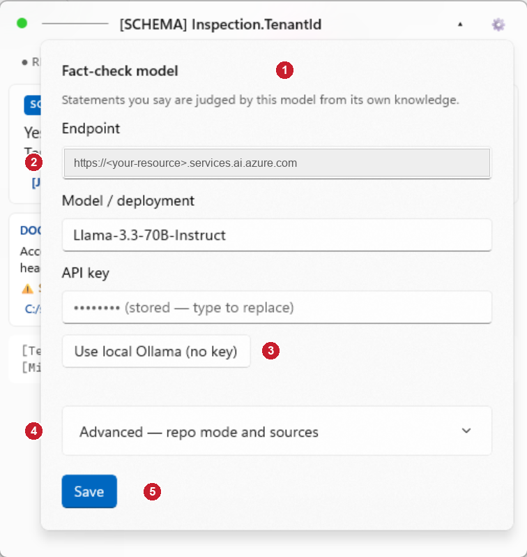
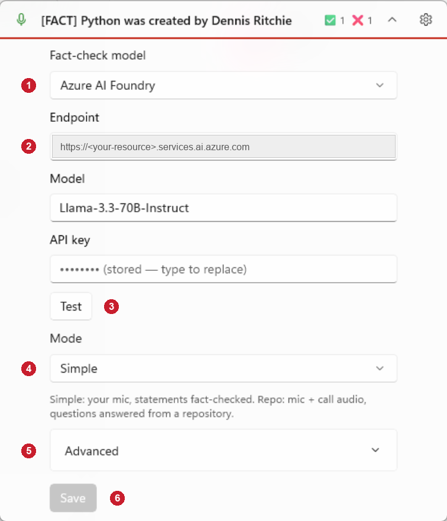

HUD and settings — before and after
Captured on 2026-10-05 from Debug builds running with sample cards (--demo), at 150 % display scaling.
"Before" is commit 3385914; "after" is the working tree with the 40 audit items applied.
The red numbers on each picture match the numbered notes under it.
1. The HUD
Before

- Microphone state is a coloured dot (green or red only) with a separate level bar next to it.
- A status row repeats the mute hint and shows "No repo selected" even in Simple mode.
- File links sit side by side and run off the edge of the card.
- Every card looks the same whatever its verdict; the web link is just "Open ↗"; nothing can be copied.
- The transcript always takes several lines.
- The window is a fixed 540 px tall, so this area stays empty.
After

- A microphone icon: green when live, red with a slash when muted. The halo behind it swells with your voice, replacing the level bar.
- Session tally of fact-check verdicts; its tooltip splits the count into you and the call.
- The pill's bottom edge takes the focus card's verdict colour. While a sentence is being checked, a running bar shows here instead.
- The tag is coloured by verdict: green supported, red contradicted, amber unverified; other sources keep the accent blue.
- A link names the site it goes to. Fact-check links are marked "cited by the model", because a model can invent a URL.
- Copy puts the headline, answer and link on the clipboard.
- The transcript is one line; click it for the recent lines. It is hidden by default in Simple mode and shown here because the sample is a repo session.
- The window ends where the content ends, and grows or shrinks with it.
The status row is gone: the pill headline shows whichever happened last, a new card or a status change such as "Muted". File links are now stacked, so each one is readable (the SCHEMA card on the shelf shows two).
2. Settings
Before

- Every model field is shown whichever provider you use, under a paragraph of explanation.
- The endpoint has to be filled in even for a local model.
- A separate button fills the fields in for Ollama.
- The mode (Simple or Repo) is hidden inside Advanced, together with the repository path.
- Save is always enabled, says nothing when it works, and is followed by a "Restart to apply" button.
After

- One choice of provider. "Local Ollama" leaves only the Model box; "Azure AI Foundry" shows what is pictured.
- Endpoint and API key appear only for Azure AI Foundry.
- Test sends one message with what is typed and reports "✓ answered" or the error, so a bad key shows up here.
- Mode is on the main view. Choosing Repo reveals the Repository row.
- Advanced holds everything that has a sensible default: mute hotkey, contradiction sound, transcript line, session log, local chatter filter, audio input, source switches and Azure DevOps.
- Save stays greyed out until something changes, applies at once without a restart, and then reads "✓ Saved and applied".
This picture is the settings content shown inside the window by --demo --settings. In the app the same content opens as a flyout from the gear, as in the "before" picture.
The endpoint is blanked in both pictures because it names a private Azure resource.